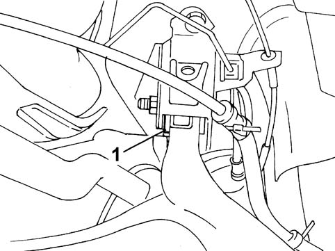

4420DA REAR SUSPENSION BUSH CLEARANCE CHECK
- Path
- Test > 44 SUSPENSION AND WHEELS > 4420 REAR SUSPENSION > 4420D REAR SUSPENSION AXLE/CROSSBEAM > 4420DA REAR SUSPENSION BUSH CLEARANCE CHECK
- Kind
- test / check procedure
- Applies to
- all engines; all production periods
- Interactive page
- https://sloeber94.github.io/elrnDB-fPnd/en/#/169001104
Applies to: all engines; all production periods
1. With the vehicle on the ground, get underneath the vehicle on a trolley and check that the clearance for the rear bushes is sufficient and that there are no signs of contact or rubbing on the outer side of the vehicle.
